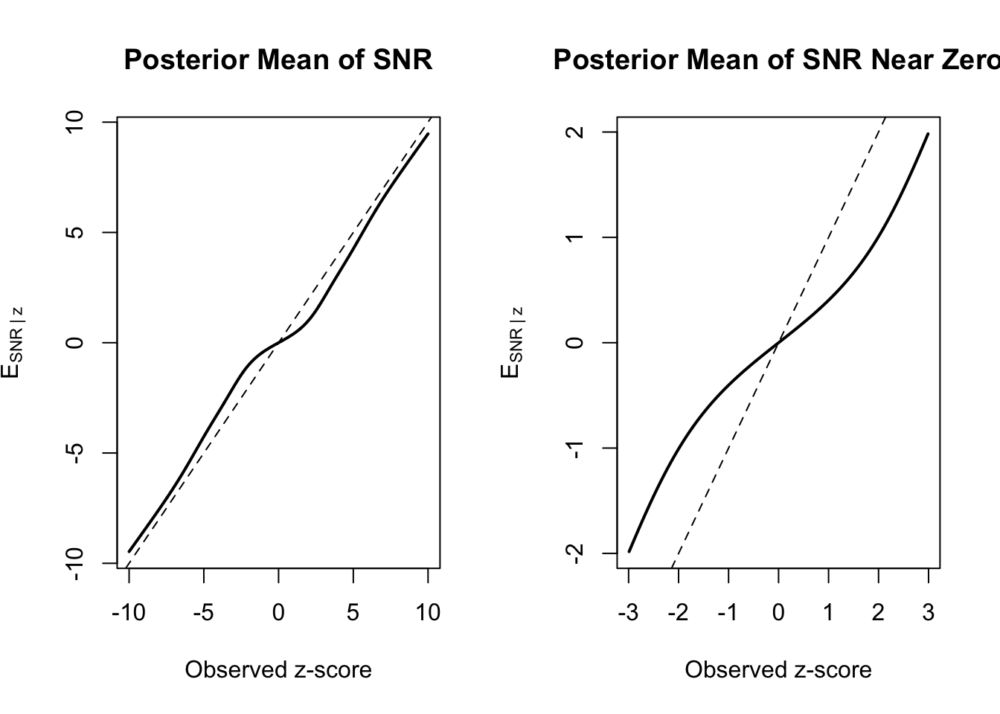

Motivation
When estimating a treatment effect (typically the lift), \(\delta_i\), using the Bayesian methodology, Datadog uses a default prior of
\[ \delta_i \sim \operatorname{Normal}(0, 0.05^2) \>.\]
Do I really believe that true effects are normally distributed? No, not really. Under such a model, we should see true lifts larger than 10% in absolute value less than 5% of the time, and lifts less than 20% less than 1% of the time. Roughly, that means 1 in every 100 experiments should produce a lift larger than 20% n absolute value. But I see effect sizes on that order more often than I should, and they sometimes have small(ish) standard errors so sampling noise doesn’t completely explain why I’m seeing them so often. It is more likely that the latent distribution of true effects is better modeled as a mixture distribution; Most treatments produce small improvements, and some produce large ones. It may be the case that we can use our context from the intervention to select a better prior, but what do we do from the platform side when we don’t have access to that.
In A/B Testing with Fat Tails the authors argue that the distribution of true treatment effects across experiments is better modeled with a heavy-tailed Student-t prior than a Gaussian prior, leading to empirical Bayes estimates that shrink small effects toward zero while preserving the possibility of rare, genuinely large innovations. This approach is nice for a few reasons:
- The t-distribution can be conceptualized as a mixture distribution. Suppose \(W \sim \operatorname{Inverse-Gamma}(\nu/2, \nu/2)\), and let \(X \mid W \sim \operatorname{Normal}(0, W)\). Then the marginal distribution of \(X\), integrating out \(W\) is a t-distribution with degrees of freedom \(\nu\). So the t-distribution kind of naturally allows for this idea of treatment effects coming from a mixture. Also,
- When using a t-distribution as the prior for the treatment effect, small lifts are shrunk more aggressively and large lifts are not shrunk so aggressively, as the authors of that paper indicate. The effect is that we take the larger effects more on face value as opposed to shrinking them so much. I’ve extolled the virtues of shrinkage, but shrinkage comes at a cost from the platform’s perspective. When you’ve got a big lift, shrinkage can cause a discrepancy between what the pen-and-paper math says the lift should be and what the platform reports. For non-technical users, this can create confusion and raise suspicion of results, each of which can erode trust in the platform.
However, the updating step when using a t-distribution does not have a nice closed form expression like the normal-normal conjugate model. While the posterior mean can be obtained via numerical integration, the posterior variance (and hence credible intervals) are a bit of a pain to compute. You could use AI to implement the numerical integration for the mean and variance, but try explaining the procedure in your docs (again…maybe easier with AI but not super clear in my opinion).
Let’s return to the t-distribution as a mixture for a moment. The marginal density of \(X\), \(f(x)\), is represented by the following integral
\[ f(x) = \int_{0}^{\infty} f(x \mid w) g(w) \> dw \]
which can be roughly thought of 1 as some sort of weighted average with infinitely many components. Much in the same way we may truncate a Taylor series to approximate some function, what if we used finitely many components and estimated a mixture distribution?
This is, more or less, what van Zwet does in The Statistical properties of RCTs and a Proposal for Shrinkage. You know van Zwet, he was a co-author on one of my favorite papers which served as inspiration for this blog post. So let’s take a page out of van Zwet’s book and apply the same technique to AB testing.
Model
van Zwet considers results from RCTs (for our purposes, we can consider this an A/B test) as a triple \((\delta, \hat \delta, s)\), where \(\delta\) is the true treatment effect, \(\hat \delta\) is our noisy estimate of \(\delta\), and \(s\) is the standard error. Rather than work with the triple, it is easier to consider the \(z\) score, \(z = \hat \delta / s\) and the noiseless analogue which van Zwet calls the “Signal to Noise Ratio”, or SNR, namely \(SNR = \delta / s\). The idea is to model the \(z\) (for reasons I will get to eventually) and then compute \(s \cdot E[SNR \mid z]\) as the estimated treatment effect which should regularize the estimate a little bit.
Now, why model the \(z\) and not the \(\hat \delta\)? Note that the marginal distribution of the \(z\) is a convolution between a standard normal and the distribution of the \(SNR\). Hence, if we model the \(z\) as a mixture of normal, we can obtain the implied distribution of \(SNR\) by subtracting 1 from each component’s variance, from which we can compute the regularized treatment effect. It is a bit of a round-world trip, but it is worth it.
If you’re following along, this should give us the density of \(SNR\), \(g(SNR)\) as
\[ g(SNR) = \sum_{k=1}^K \pi_k \operatorname{Normal} \left( SNR \mid 0, \sigma_k^2 - 1 \right), \] and the density of the \(z\) as \[ f(z) = \sum_{k=1}^K \pi_k \operatorname{Normal} \left( z \mid 0, \sigma_k^2 \right). \]
So how do we compute \(E[SNR \mid z]\)? Once we have fit the mixture distribution for \(z\), each mixture component implies a corresponding prior component for \(SNR\). Within each component, this is just the usual normal-normal update: if the marginal variance of component \(k\) for \(z\) is \(\sigma_k^2\), then the implied prior variance for \(SNR\) is \(\sigma_k^2 - 1\). Recall that \(z \mid SNR \sim \operatorname{Normal}(SNR, 1)\), so within component \(k\) the likelihood points the estimate at \(z\) with variance 1, while the prior pulls it toward 0 with variance \(\sigma_k^2 - 1\). As with any normal-normal update, the posterior mean is the precision-weighted average of these two, weighting each by its inverse variance:
\[ E[SNR \mid z, k] = \underbrace{\frac{1/1}{1/1 + 1/(\sigma_k^2 - 1)}}_{\text{weight on } z}\, z \;+\; \underbrace{\frac{1/(\sigma_k^2 - 1)}{1/1 + 1/(\sigma_k^2 - 1)}}_{\text{weight on } 0}\, 0 . \]
The weight on the prior mean contributes nothing since it multiplies 0, and the weight on \(z\) simplifies, leaving
\[ E[SNR \mid z, k] = \frac{\sigma_k^2 - 1}{\sigma_k^2}\, z. \]
But we do not know which component generated the observation, so we average these component-specific posterior means using the posterior probability that the observation came from each component:
\[ p(k \mid z) = \frac{ \pi_k \phi(z;0,\sigma_k^2) }{ \sum_{j=1}^K \pi_j \phi(z;0,\sigma_j^2) }. \]
Putting these together,
\[ E[SNR \mid z] = \sum_{k=1}^K p(k \mid z) \frac{\sigma_k^2 - 1}{\sigma_k^2} z. \]
Finally, since \(SNR = \delta / s\), the regularized treatment effect estimate is
\[ E[\delta \mid z, s] = s \cdot E[SNR \mid z]. \]
Notice that this estimator behaves much like the posterior mean under a heavy-tailed prior. Small \(z\)-scores are assigned primarily to the low-variance mixture components and are therefore shrunk aggressively toward zero. Large \(z\)-scores, on the other hand, are increasingly attributed to the high-variance components, resulting in much less shrinkage. In this way, the finite mixture model captures the same intuition as the fat-tailed priors proposed in the Microsoft paper, while retaining the convenience of a closed-form posterior update.
Simulation
Take a look at the plot below. I simulated 2000 true lifts from a mixture distribution; 80% came from a normal with mean 0 and standard deviation 0.05, and the remaining 20% came from a heavier tailed distribution. I estimated a mixture distribution with four components, and created the \(E[SNR \mid z]\) estimator.
I’ve plotted the observed \(z\) score versus the posterior expectation of the SNR and it has roughly the same shape as Figure 1 in the Microsoft paper.
So it seems we can achieve a similar result – shrinking smaller treatment effects, while believing larger estimated treatment effects and applying less shrinkage – without actually using a t-distribution. Instead, we can just do the same conjugate normal normal calculation \(k\) times, and then perform a weighted average. I really like this. This is not to say that the student t-distribution is worse or not worth doing – quite the opposite. Rather, if you’re running A/B tests and you have an option for a Bayesian analysis, you’re probably already using the conjugate normal normal model. Just seems more convienient to reuse that approach rather than switch over wholesale.
Footnotes
Hand waving aggressively↩︎